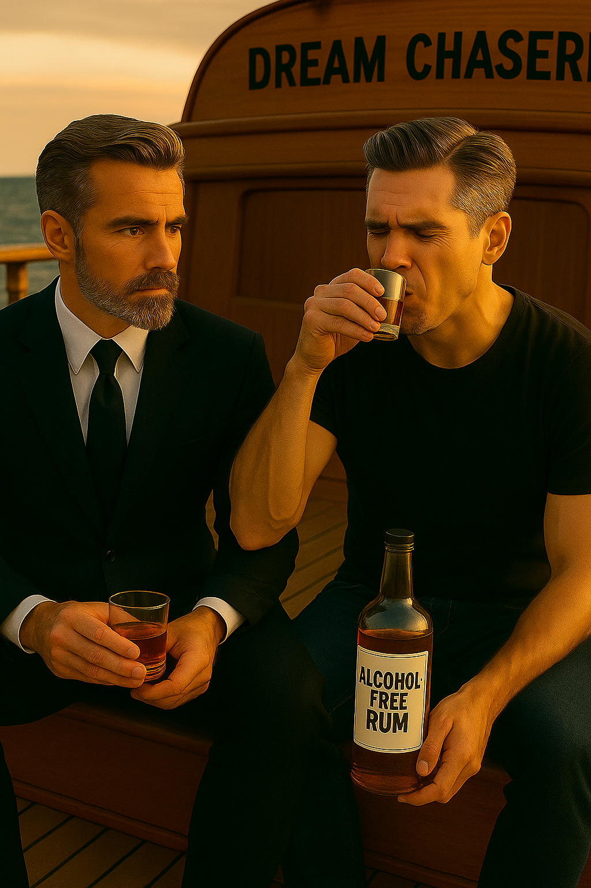

53. Rum senza alcol e lacrime di risate (Ром без алкоголя и слёзы от смеха)

На палубе яхты Dream Chaser всё готово к новому выпуску блога. Камеры, микрофоны, закат, море, стильный Антон и расслабленный Марк — харизматичные близнецы, которые впервые пробуют… безалкогольный ром с загадочной репутацией. Один насторожен, другой смеётся, а вокруг — вся команда готова поймать каждую реакцию. Начинается всё с дубля, который должен был быть обычной съёмкой. Но бокал ромa вызывает столько шуток, нелепостей, переведённых фраз с итальянского, падений и смеха, что уже через пару минут съёмка превращается в комедийное шоу. Камера качается, люди сползают под штатив, кто-то расплескал чай, кто-то — ром. Смех срывается с палубы, как волны, и невозможно не заразиться этой атмосферой. И вдруг — поворот, который никто не ожидал. После публикации видео Марк читает комментарий от студента из Москвы. Короткое письмо — и его глаза наполняются слезами. Это не просто фраза от зрителя. Это голос из прошлого. Воспоминание о дедушке, об ароматах моря и детстве, когда даже без понимания слов можно было смеяться от сердца. И тогда Марк не выдерживает. Он говорит то, о чём молчал два года: о ссоре с отцом, о невыносимом сожалении, что не успел проститься, что ушёл в море без примирения. Слова льются сквозь слёзы. Весь экипаж — с ним. Никто больше не играет, никто не притворяется. Все просто молча обнимают, держат за руку, дают понять: «Ты не один». И всё это — на фоне того самого безалкогольного рома. Напитка, с которого начался смех… и закончилась внутренняя тишина. 🎧 Этот рассказ стоит услышать. Потому что в нём — весь спектр чувств: от хохота до комка в горле. Потому что он не только про ром. Он про то, как одно письмо может вернуть тебя в детство. Про то, как важно сказать главное, пока не поздно. И про то, как даже самое случайное видео может стать настоящим исцелением — для всех. ← Вернуться на главную